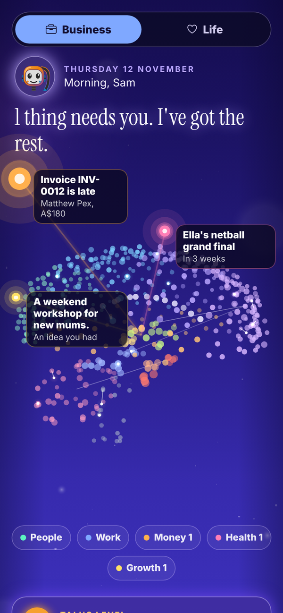
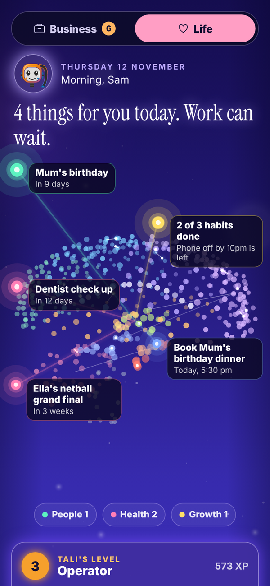
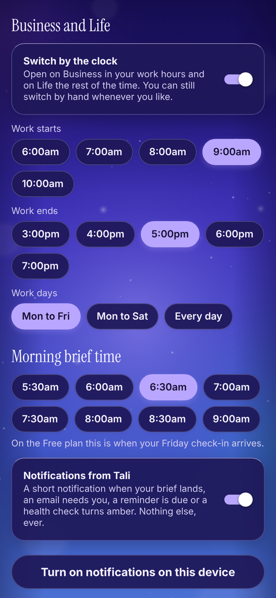

Tali HQ guide
Business and Life modes
One switch on Today flips Tali HQ between your work and the rest of your week. Tali sorts things to the right side, and it can switch by the clock.
If you told Tali you have a business, Today and Your world have a Business / Life switch at the top. Each side shows its own things, and the other side shows a count so you can see when something is waiting there.


What each side shows#
- Business: money, your pipeline and your business tools, with the work parts of Your world.
- Life: habits, what is coming up and money left this week, with the life parts of Your world.
- Her brain stays at the top of Today on both sides, and your people are in both.
If you do not have a business, there is no switch and Today looks the way it always has.
Tali sorts things for you#
Tali gives each reminder, list item and line of your brief a side, so work things show in Business and the rest shows in Life. This costs no credits. On To do, Ideas, Learning, Wins and Someday you can change which side an item belongs to, or filter by Everything.
Switch by the clock#
In Settings, turn on Switch by the clock. Pick when work starts and ends and which days you work. Tali HQ opens on Business in your work hours and on Life the rest of the time. You can still switch by hand whenever you like, and your choice holds until work next starts or ends.
